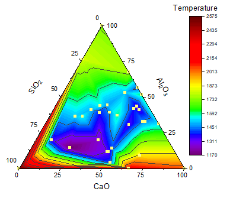

三点等高線図
TernaryContour
概要
このチュートルアルは、三点(ターナリ)等高線図に散布図を重ねて表示する方法を示します。
- 
必要なOriginのバージョン: Origin 2020以降
学習する項目
- 三点等高線図の作成
- ドラッグアンドドロップで散布図を重ねる
- ミニツールバーを使ってグラフを編集
ステップ
このチュートリアルは、チュートリアルデータプロジェクト（<Origin EXE フォルダ>\Samples\TutorialData.opj）と関連しています。
また、ラーニングセンターからこのグラフを呼び出すことができます。(ヘルプ: ラーニングセンター メニューを選択、または キーボードのF11 キーを押して、「Ternary Contour」で検索します)
- TutorialData.opj を開き、プロジェクトエクスプローラでTernary Contour フォルダを開きます。
- Book1Aをアクティブにし、ワークシート全体を選択します。そして、作図 > 等高線図：三点等高線を選択して、三点等高線図を作成します。では、この三点等高線図に散布図を重ねましょう。C列のヘッダをクリックして選択し、列の右端にマウスカーソルを移動します。ドラッグアンドドロップアイコン
 が表示されます。クリックしてドラッグアンドドロップし、データを三点グラフに追加します。
が表示されます。クリックしてドラッグアンドドロップし、データを三点グラフに追加します。
- 次に、等高線図と散布図の編集を行います。三点等高線図上でクリックしてミニツールバーを開き、レベルの設定ボタンをクリックして、次のように主レベルと副レベルを設定します。
- OK をクリックして、レベルの設定ダイアログボックスを閉じます。三点等高線図を再度クリックして、ミニツールバーでパレットボタンをクリックし、リストからRainbowを選択します。
- 散布図上でクリックしてミニツールバーを開き、シンボルの塗りつぶし色ボタンをクリックして、色を薄い黄色 に設定します。
- 色スケールをダブルクリックし、色スケール制御ダイアログを開きます。左パネルでレベルを選択して、両端のレベルを非表示にするにチェックを付け、OKをクリックしてダイアログを閉じます。
- グラフは次のようになります。